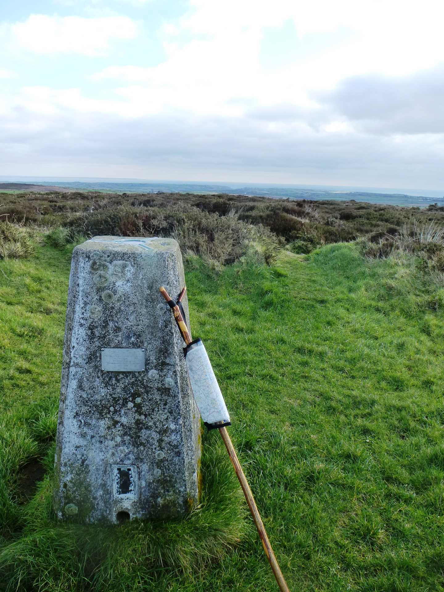
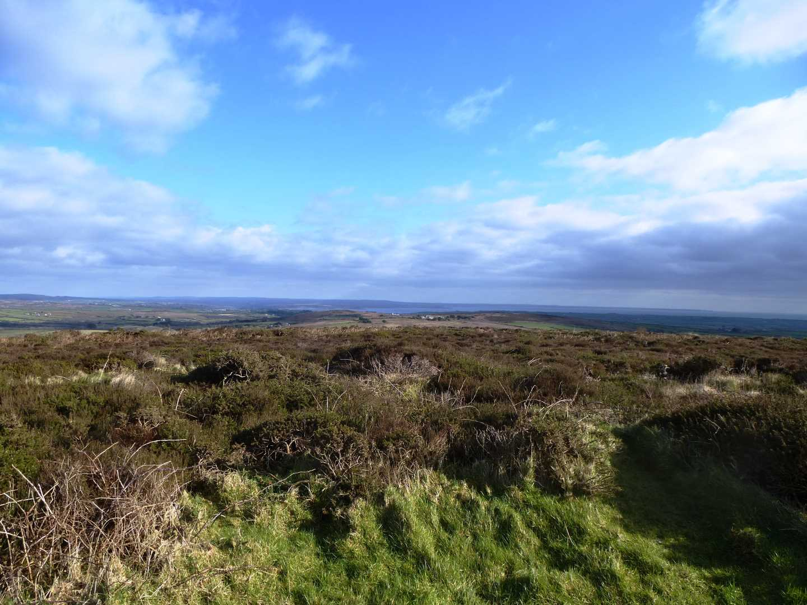

Start Ref: 389 283
End Ref: 389 283
Distance: 2.5 miles
Time: 2hrs
From the car park we are going to walk along the road, in the direction of Land`s End Airport, for a few hundred meters before turning right up a track which is signposted to Little Carn Grean (and signposted Private Traffic Only). Do not worry, this is a public path. Follow this track as it passes the side track to the Quarry and after a short distance it runs alongside a farmhouse and appears to peter out into a small single track and then after a short distance it opens out into a field.
Now, here the path becomes difficult to follow. It took both myself and my father a little while to find the path which is a little to the north of where the map says it is!
We need to cut across onto the open access area in front of us, and to do this we follow the hedge on our left for about 20 meters before heading straight across. After a little searching there is a narrow beaten track through the bracken which leads up to a small granite stile and we are back on a wider path that is running across our way. This is the worst section completed!
Here, we now follow the wider path to the left (there are two paths at this point, we need to take the higher left path) as it skirts around the edge of Bartinney Downs, but where there is a choice of bracken routes, keep taking the higher path. At length we come to Higher Bartinney Farmhouse. By the house there is another choice of path. Either through the kissing gate to our left or to follow the path up the hill slightly ahead of us and to the right. This right hand path is the one we are taking as this leads up to Bartine Castle, which is an ancient enclosure with a cairn.
At the summit is a Trig Point and some of the best views I think it is possible to have in Cornwall. The Isles of Scilly, Carn Brea, Carn Galver, St. Michaels Mount, The Lizard, Ding Dong Mine, North Coast and South Coast. From a height of 224m we can see it all.
After refreshing our minds with the view of our beautiful Cornwall, we carry on in a South Easterly direction to drop down off the summit. The path will split left and right, and we need to take the left hand branch, which winds its way down. At the end of this path, we come to a granite stile. After stepping over the stile, our intended path is to go right (SW), but you may want to deviate the 100m to go and visit St. Euny`s Well which is up on our left.

The right hand path is now wider and flatter as it becomes a bridleway and leads us West over Tredinney Common, and takes us past the quite well hidden disused China Clay Works. Eventually we come to a gate, which once we have gone through we can cross the road and make it back to our car.
As stated at the onset of this walk, the paths on this walk are not the easiest to follow, but the views are worth the effort.
I hope you enjoy, and maybe take the advantage of the short walk up to the summit of Chapel Carn Brea (as you are here!)